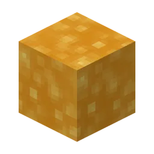
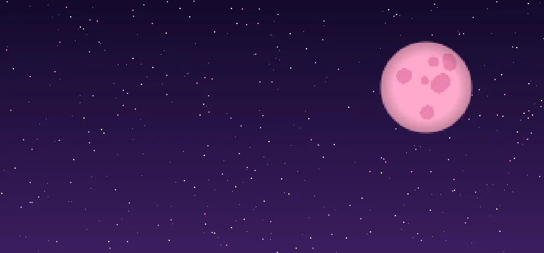
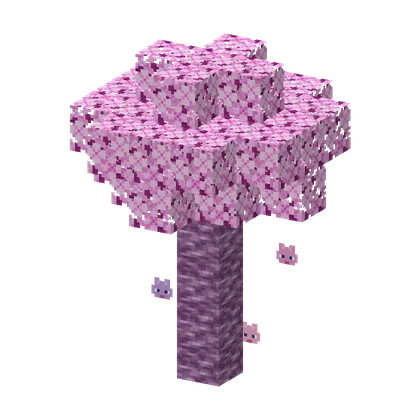
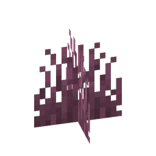

The pink world of the guhs: wool, cheese sauce, guh crystals and almost every structure, minigame and story. You get there through a portal of blocks of kaasknabbels.
De roze wereld van de guhs: wol, kaassaus, guhkristallen en bijna alle bouwwerken, minigames en verhalen. Je komt er via een portaal van blokken kaasknabbels.
The portalHet portaal
Build a nether-portal-shaped frame of Blocks of Kaasknabbels (inside 2×3 up to 21×21, corners optional). It lights up by itself as soon as the frame is complete. Stand in it for 1.5 seconds. If there's no portal on the other side yet, one is built on the surface on a small pink wool platform.
Bouw een frame in de vorm van een netherportaal van Blokken kaasknabbels (binnenkant 2×3 tot 21×21, hoeken hoeven niet). Het gaat vanzelf aan zodra het frame dicht is. Sta er 1,5 seconde in. Is er aan de andere kant nog geen portaal, dan wordt er een gebouwd op het oppervlak, op een roze wolplatformpje.

Kaas sausKaassaus
Thick, bubbly cheese sauce (like lava, but it doesn't burn) that flows from the spouts of cheese fountains and through cave pantries. It spreads as far as water but three times slower (lava is six times slower) and is thicker to swim in. Right-click it with an empty hand to fill your hunger bar — the sauce isn't used up.
Dikke, borrelende kaassaus (net lava, maar hij brandt niet) die uit de spuiten van kaasfonteinen en door voorraadkamers in de grotten stroomt. Hij stroomt net zo ver als water, maar drie keer zo langzaam (lava zes keer) en is dikker om in te zwemmen. Rechtsklik erop met een lege hand om je hongerbalk te vullen — de saus raakt niet op.

A pink night skyEen roze nachthemel
At night the Guhmension has its own sky: a big pink moon and thousands of softly twinkling pink and lilac stars.
's Nachts heeft de Guhmensie een eigen hemel: een grote roze maan en duizenden zacht fonkelende roze en lila sterren.

Guh blossom treesGuhbloesembomen
Here and there in the Guhmension grows a guh blossom tree (Guhbloesem): lilac bark and soft pink blossom from which tiny guhs drift down, like cherry petals. Its blossom now and then drops a sapling (Guhbloesemboompje) that grows on grass, dirt and pink wool; the logs make Vadsplanken. They also grow around the sled hut.
Hier en daar in de Guhmensie groeit een guhbloesemboom: lila schors en zachtroze bloesem waar piepkleine guhtjes uit naar beneden dwarrelen, net als kersenbloesem. De bloesem laat soms een Guhbloesemboompje vallen dat groeit op gras, aarde en roze wol; de stammen worden Vadsplanken. Ze staan ook rond de sleehut.

Pink grass and flowersRoze gras en bloemen
The Guhmension is greener now — well, pinker: pink grass (sometimes drops kaasknabbel seeds) and the four guh flowers grow everywhere.
De Guhmensie is nu groener — nou ja, rozer: roze gras (geeft soms kaasknabbelzaadjes) en de vier guhbloemen groeien overal.
StructuresBouwwerken
- Ballonfestival
- Barbecueput
- Blokguh
- Boomhutdorp
- De Elf-Guhjestocht
- De Knabbelkatapult
- De Knabbelspelen
- De neergestorte capsule
- Groot hamsterhuis
- Grote kaasfontein
- Guh Beauty Theater
- Guh-Sterrenwacht
- Guh-picknick
- Guhbibliotheek
- Guhboerderij
- Guhbubbel
- Guhdisco
- Guhdorp
- Guhfossiel
- Guhgolfbaan
- Guhgrotten
- Guhkasteel
- Guhkermis
- Guhland
- Guhracebaan
- Guhramide
- Guhstandbeeld
- Guhvisvijver
- Hamsterhuis
- Hamsterstad
- Het Guh-Circuit
- Het Guhdoolhof
- Het Hemelkapelletje
- Het Sjoelhuisje
- Het kloon-eiland
- Het paalhuisje van Lilo en Nani
- Het surfstrand van Guhwai'i
- Huis van Boze Mika
- Kaasfontein
- Kaasknabbel-nest
- Kaasknabbelboog
- Kaasmijn
- Kampeerplekje
- Knabbelkelder
- Knuffelbad
- Knuffeldal
- Kwartsbeeldje
- Mika-kamp
- Mika-mephal
- Minipicknick
- Nomguh
- Paalhut van de Moerasheks
- Reuzenkaasknabbel
- Reuzentaart
- Sleehut
- Stille Voorraadkelder
- Uitdagende guhgrotten
- Vadsig eetfestijn
- Vadsig-heiligdom
- Verlaten kaasmijnschacht
- Verstopguhhuis
- Zwevende guh-eilandjes